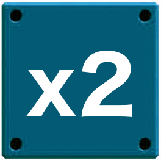
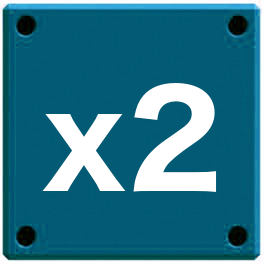
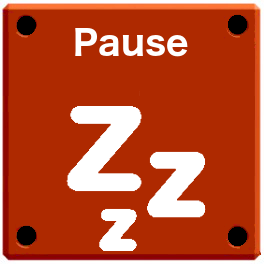
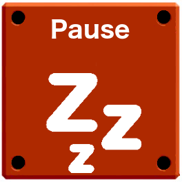

Le grand défi des robots
Un jeu original pour 2 joueurs, sur mobile en ligne.
Robocode est un jeu dans lequel deux robots s'affrontent au tour par tour en aller chercher des drapeaux en vue de les poser dans la base adverse. Le premier robot à déposer deux drapeaux dans la base de l'adversaire gagne la partie.


Règles du jeu
Robocode est un jeu de réflexion qui se joue à deux joueurs, au tour par tour. Chaque joueur contrôle un robot qu'il programme avec un jeu d'instructions très simple que le robot exécutera à chaque tour de jeu.
Le plateau de jeu est un carré de 9 × 9 cases. Les bases des robots sont disposés sur 4 cases aux extrémités ouest (robot bleu) et est (robot rouge). Les drapeaux à ramasser sont disposés sur les côtés nord et sud du damier. Initialement, chaque robot débute sur une case aléatoire de sa base, orienté dans la direction de la base adverse. Quatre drapeaux sont disposés dans la zone au nord et quatre au sud, mélangés aléatoirement dans ces zones (mais avec 2 drapeaux rouges et 2 bleus dans chaque zone). Le robot rouge a la main. C'est lui qui commencera en premier l'exécution de son programme.
Au début du tour, chaque joueur choisit 5 cartes "code" qui vont composer les 5 instructions du programme qui sera exécuté par son robot. Quand les deux joueurs ont écrit et validé leur programme, ceux-ci sont exécutés. Les robots suivent leurs instructions une par une, à tour de rôle : le premier robot exécute sa première instruction, puis le second robot exécute sa première instruction, ensuite c'est au premier robot d'exécuter sa deuxième instruction, puis au second, et ainsi de suite, jusqu'à ce que les 5 instructions aient été exécutées. A la fin de chaque programme (série de 5 instructions), les joueurs sont invités à écrire leur prochain programme, et la main passe à l'autre robot qui exécutera ses instructions en premier. Si une action est impossible à réaliser, le robot ne bouge pas jusqu'à l'instruction suivante. Un robot ne peut pas aller sur une case déjà occupée par l'autre robot, ni sortir du plateau. Les robots ne portent qu'un seul drapeau à la fois.
La partie se termine lorsque l'un des deux joueurs a réussi à poser deux drapeaux dans sur la base adverse. Le perdant hérite d'un gage.


Les actions/instructions possibles


Nord, Sud, Est, Ouest
Le robot se tourne dans la direction indiquée et avance d'une case. Il n'est pas possible d'avancer sur une case déjà occupée par l'autre robot.Est ×2 - Ouest ×2
Le robot avance de deux cases dans vers l'ouest (robot bleu) ou vers l'est (robot rouge).

Prendre
Le robot prend le drapeau qui est sur la case où il se trouve. Le robot ne peut prendre qu'un drapeau à la fois.Déposer
Le robot dépose le drapeau qu'il porte sur la case où il se trouve. Il ne peut y avoir qu'un seul drapeau par case.

Repousser
Le robot adverse recule d'une case dans la direction de sa base (vers l'est pour le bleu, vers l'ouest pour le rouge)

Annuler
L'action que le robot adverse doit faire à ce tour est annulée, même si celui-ci joue en premier. En conséquence, le robot ne fait rien. 

×2
Répète l'action indiquée sur la carte précédente. 

Pause
Le robot ne fait rien.

Prêt ? C'est parti !
Pour jouer, saisissez les instructions composant votre programme et validez celui-ci. Dès que les deux joueurs ont validé leurs instructions, vous pouvez faire exécuter le programme aux robots.
Faites votre choix :